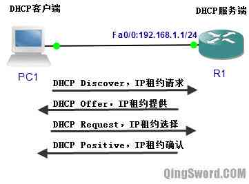
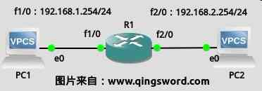
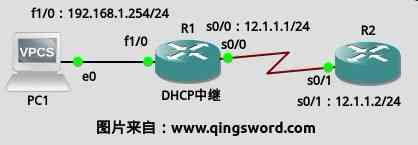

[CCNA图文笔记]-29-DHCP协议实例详解
引言
这篇文章主要介绍DHCP（Dynamic Host Configuration Protocol，动态主机分配协议）的工作过程；文章后半部分会实例演示如何在Cisco路由器上配置DHCP、如何配置DHCP中继服务。
文章目录
0×1.DHCP工作过程
DHCP工作流程如下：
DHCP客户端(PC1)被配置成自动获取IP，R1上面配置了DHCP服务，当PC1启动连接网络时，通过下面的步骤来从DHCP服务端(R1)上获取IP：
1）PC1通过网卡向外广播DHCP Discover信息，该数据包的目的MAC是广播MAC地址（FFFFFFFFFFFF），源MAC地址是PC1的网卡MAC地址；该数据包的目的IP是255.255.255.255，源IP是0.0.0.0；DHCP使用UDP协议，该数据包的目的UDP端口是67（DHCP服务端使用的UDP端口），源UDP端口是68（客户端使用的UDP端口）。
2）R1收到PC1的DHCP Discover广播包，比如上图中R1的Fa0/0接口配置的IP地址是192.168.1.1/24，R1从Fa0/0接口接收到PC1的DHCP Discover广播包后，它在本地的DHCP配置中寻找可以和自己Fa0/0匹配的地址池(192.168.1.0/24这个子网的地址池)，如果配置了这个地址池，R1查找这个地址池中还可以使用的IP地址；这里假设192.168.1.100是可用的，R1在提供租用地址之前首先会发送一个ARP查询包，查询192.168.1.100在网络上有没有被使用，如果收到应答，表明这个IP已经被使用，R1在地址池中换一个地址再发送ARP查询，直到找到没有ARP回复的那个IP地址。
3）R1向PC1发送DHCP Offer信息，其中包括这个没被使用的IP地址，DHCP Offer包仍然是一个广播包，目的MAC是广播MAC地址，源MAC是R1的Fa0/0的MAC地址，目的IP是255.255.255.255，源IP是192.168.1.1，目的端口是UDP68，源端口是UDP67。
4）在上面几步中，如果PC1发送的DHCP Discover广播没有DHCP服务端回复，PC1将无法获得IP地址，PC1会每隔一段时间发送一次DHCP Discover,在没有请求到IP地址的这段时间里，Windows主机会被临时分配一个属于169.254.0.0/16的本地地址。
5）接着上面的第三步，PC1收到R1发回的DHCP Offer信息，PC1马上发送DHCP Request包，表示自己将使用R1所提供的IP地址；该数据包还是一个广播包，目的MAC是广播MAC，源MAC是PC1的网卡MAC，目的IP是255.255.255.255，源IP是0.0.0.0，传输层的目的UDP端口是67，源UDP端口是68。DHCP Request中包含了要选择的DHCP服务器（R1的Fa0/0接口）的IP地址以及客户端(PC1)将要使用的IP地址。
6）R1收到PC1发来的DHCP Request信息后，马上发送DHCP Ack确认信息，该确认信息也是以广播发送的（和第三步中的包头差不多，这里就不描述了）。DHCP Ack中包含了一些其他选项，比如子网掩码、默认网关、DNS地址、租约期限、域名等。
7）PC1收到DHCP Ack后，利用其中的信息配置自己的TCP/IP属性，然后广播一个ARP Reply包，这个包的目的是通知其他设备，该IP地址已经被使用。
0×2.DHCP配置实例
a.思科路由器如何配置DHCP
在GNS3中搭建下面的拓扑，PC1-2为vpcs模拟两台真实计算机，R1是c3640路由，接口连线与IP如下图所示，在R1上配置DHCP服务，让PC1-2分别获取到自己网段的IP地址：
R1>en R1#conf t /*配置接口IP*/ R1(config)#int fa 1/0 R1(config-if)#ip add 192.168.1.254 255.255.255.0 R1(config-if)#no shut R1(config-if)#int fa 2/0 R1(config-if)#ip add 192.168.2.254 255.255.255.0 R1(config-if)#no shut R1(config-if)#exit /*配置dhcp地址池，地址池自定义名称为xxx1*/ R1(config)#ip dhcp pool xxx1 /*这个地址池的可用IP范围*/ R1(dhcp-config)#network 192.168.1.0 255.255.255.0 /*默认网关*/ R1(dhcp-config)#default-router 192.168.1.254 /*默认DNS地址*/ R1(dhcp-config)#dns-server 192.168.1.254 /*域名（可选）*/ R1(dhcp-config)#domain-name www.qingsword.com /*租约期限，3天*/ R1(dhcp-config)#lease 3 R1(dhcp-config)#exit /*配置第二个地址池*/ R1(config)#ip dhcp pool xxx2 R1(dhcp-config)#network 192.168.2.0 255.255.255.0 R1(dhcp-config)#default-router 192.168.2.254 R1(dhcp-config)#dns-server 192.168.2.254 R1(dhcp-config)#domain-name www.qingsword.com R1(dhcp-config)#lease 1 R1(dhcp-config)#exit /*排除地址，下面两个地址不会被DHCP分配出去，因为他们是路由接口地址*/ R1(config)#ip dhcp excluded-address 192.168.1.254 R1(config)#ip dhcp excluded-address 192.168.2.254 R1(config)#end
完成后，打开PC1-2的终端，使用自动获取IP命令：
/*都能正确的获取IP地址，如果是在真实PC上面自动获取，还能看到域名租约期限等信息*/ VPCS> set pcname PC1 PC1> ip dhcp DDORA IP 192.168.1.1/24 GW 192.168.1.254 VPCS> set pcname R2 R2> ip dhcp DDORA IP 192.168.2.1/24 GW 192.168.2.254
本来这一部分想用GNS3+VMware中的PC来模拟，但考虑到实验的复杂度和描述难度，就使用vpcs代替了。
b.思科路由器如何配置DHCP中继
如下图所示，R1的f1/0连接到一台vpcs，R1是DHCP中继服务器，R2是DHCP服务器，R1负责将vpcs发来的DHCP广播请求以单播的形式发给DHCP服务器R2：
R1配置：
R1>en R1#conf t R1(config)#int fa 1/0 R1(config-if)#ip add 192.168.1.254 255.255.255.0 /* * 在与PC客户端相连的那个接口上配置DHCP中继服务， * "ip helper-address 12.1.1.2" * 将这个接口收到的DHCP广播请求以单播形式发给DHCP服务器12.1.1.2， * DHCP中继与DHCP服务器之间必须路由可达。 */ R1(config-if)#ip helper-address 12.1.1.2 R1(config-if)#no shut R1(config-if)#int s 0/0 R1(config-if)#ip add 12.1.1.1 255.255.255.0 R1(config-if)#no shut R1(config-if)#end
R2配置：
R2>en R2#conf t R2(config)#int s 0/1 R2(config-if)#ip add 12.1.1.2 255.255.255.0 R2(config-if)#no shut R2(config-if)#exit /*DHCP地址池排除R1以太网接口的IP*/ R2(config)#ip dhcp excluded-address 192.168.1.254 /*配置地址池与参数*/ R2(config)#ip dhcp pool 192pool R2(dhcp-config)#network 192.168.1.0 255.255.255.0 R2(dhcp-config)#default-router 192.168.1.254 R2(dhcp-config)#dns-server 192.168.1.254 R2(dhcp-config)#domain-name www.qingsword.com R2(dhcp-config)#lease 3 R2(dhcp-config)#exit /*如果PC1要和R2通信还要添加下面一条静态路由（这一句并不是DHCP中继必须的）*/ R2(config)#ip route 192.168.1.0 255.255.255.0 12.1.1.1 R2(config)#end
PC1上通过DHCP获取IP：
/*成功获取到IP和网关*/ VPCS> ip dhcp DDORA IP 192.168.1.1/24 GW 192.168.1.254 /*尝试ping R2，通信成功，如果没有在R2上配置那条静态路由，就ping不通*/ VPCS> ping 12.1.1.2 84 bytes from 12.1.1.2 icmp_seq=1 ttl=254 time=49.999 ms